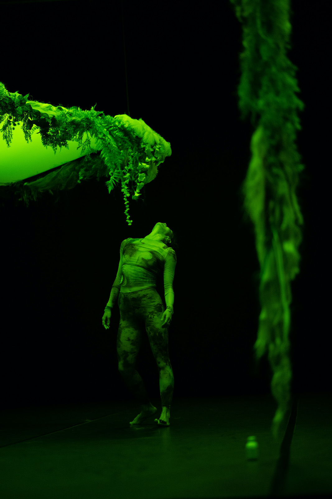
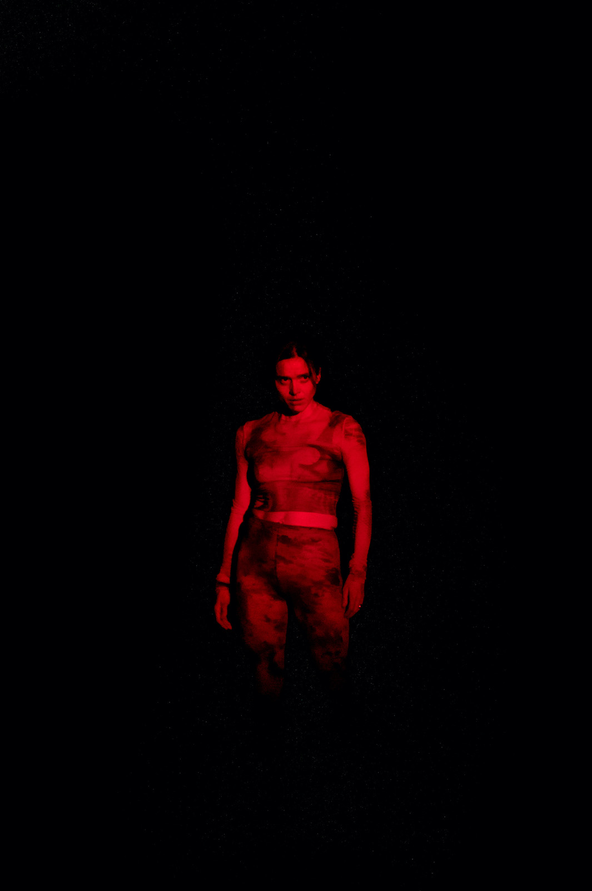
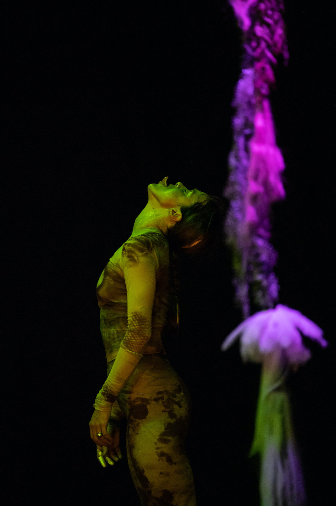

La notte è il mio giorno preferito
La notte è il mio giorno preferito è una riflessione sul rapporto con l’Altro attraverso una meditazione sugli animali e gli ecosistemi in cui vivono.
Lo spettacolo prende spunto dalla pratica, delineata da Baptiste Morizot nel saggio Sur la piste animale, del tracciamento filosofico: l’esercizio di seguire le piste attraversate dagli animali selvatici nel tentativo di prenderne in prestito lo sguardo e intuirne le possibilità d’azione, seguendo la posizione ontologica prospettivista formulata dall’antropologo Eduardo Viveiros de Castro.
Una residenza organizzata da far° Nyon ha permesso di fare esperienza della pratica di tracciamento nei territori di Val d’Illiez e del Giura (Svizzera) e di approfondire la ricerca sul suo ecosistema.
L’animale e il vegetale, l’organico e l’inorganico si fondono nello spazio oscuro della foresta notturna; frane e richiami irrompono spezzandone la quiete. Segnali e strumenti percettivi misteriosi, ispirati a diverse specie, ne costituiscono il tessuto connettivo. Una foresta né vergine né idealizzata, ma tecnonaturale, che include e trasforma i segni lasciati dai propri abitanti.
Il titolo La notte è il mio giorno preferito, tratto da una lettera di Emily Dickinson, si riferisce al buio come spazio della presenza assentata dell’animale, come luogo dell’intuizione e dell’incontro con l’Altro.
La notte è il mio giorno preferito è immaginato e realizzato in collaborazione con Natália Trejbalová (artista visiva), Stella Succi (ricercatrice), Giulia Pastore (light designer), Jules Goldsmith (costumista), Flora Yin-Wong (sound artist).
Produzione Associazione L’Altra.
Coproduzione FOG Triennale Milano Performing Arts, Fondazione del Teatro Grande di Brescia,
Torinodanza, Fondazione I Teatri Reggio Emilia \ Festival Aperto, Lac Lugano Arte e Cultura,
Azienda
Speciale Palaexpo – Mattatoio | Progetto Prendersi cura.
Con il sostegno di Centro Nazionale di Produzione della Danza Virgilio Sieni e di Fondazione
CR Firenze, Oriente Occidente, far° festival des arts vivants Nyon.
Artista Associata Triennale Teatro Milano 2021-2024.
Compagnia finanziata da MiC - Ministero della cultura.
Ideazione, danza
Annamaria Ajmone
Set, styling, immagini
Natália Trejbalová
Ricerca, collaborazione drammaturgica
Stella Succi
Musiche
Flora Yin Wong
Costume
Jules Goldsmith
Disegno luci
Giulia Pastore
Datore luci
Elena Vastano
Preparazione voce
VEZA e Paola Stella Minni
Progetto web
Giulia Polenta
Organizzazione
Martina Merico
Amministrazione
Francesca d’Apolito
STAMPA
"Annamaria Ajmone. Nella notte, alla ricerca dell’alterità", Stefano Tomassini
Teatro e Critica (2021)
"Ajmone, la magnetica fisicità di una vitalità instancabile"
Bresciaoggi (2022)
"Animale, vegetale, selvaggia, concettuale", Sara Polotti
Giornale di Brescia (2022)
MEDUSA newsletter (2022)
"Sulla pista del buio: in dialogo con Annamaria Ajmone", Giada Cipollone
Triennale Magazine (2022)
"Annamaria Ajmone: La notte è il mio giorno preferito", Annika Pettini
ZERO (2022)
"Call of the Wild", Lauren Mackler
ARTFORUM (2022)
"Annamaria Ajmone, La notte é il mio giorno preferito", Beatrice Lapadat
MACULTURE (2022)

"A volte mi sembra che nella foresta il tracciamento sostituisca, sotto i nostri piedi e alle nostre spalle, un’ontologia a un’altra: lo schema naturalista diviene prospettivista, si tinge di animismo, si mescola, si chimerizza. Come i prestigiatori tolgono la tovaglia senza far cadere i piatti, ritroviamo furtivamente sotto i nostri piedi, sul suolo che scrutiamo, un’altra carta del vivente in scala 1:1 – un’altra ontologia da esplorare e condividere. Il tracciamento è una pratica su piccola scala che ci fa circolare tra i mondi, tra le ontologie. Come funziona questo gioco di prestigio? Che tipo di spostamento ha luogo quando sentiamo di vedere con gli occhi di un altro?"
B. Morizot, “Sulla pista animale”
Ascolta Flora Yin Wong